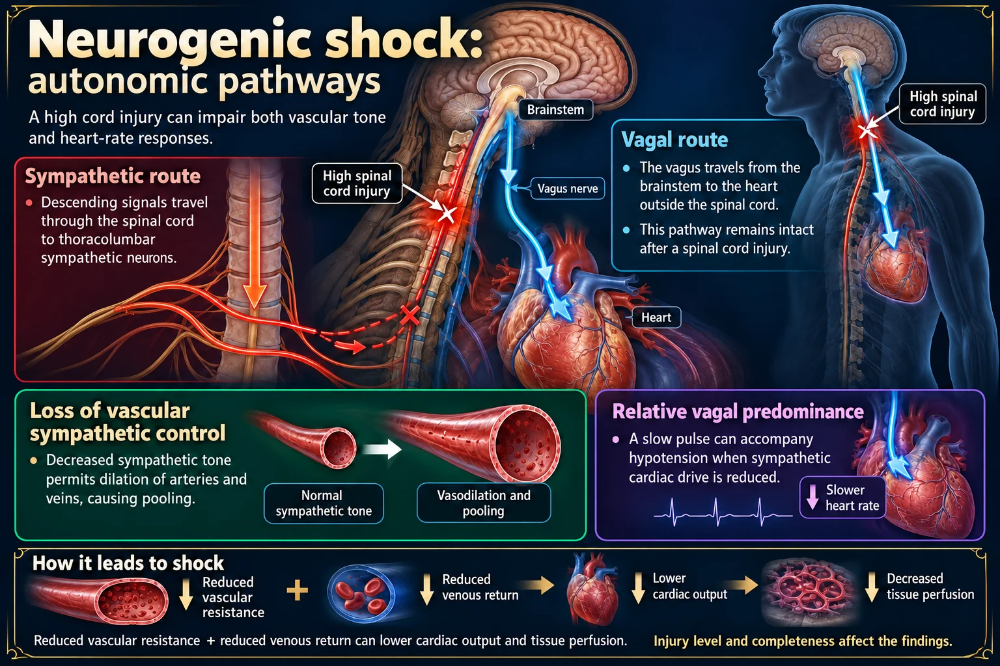
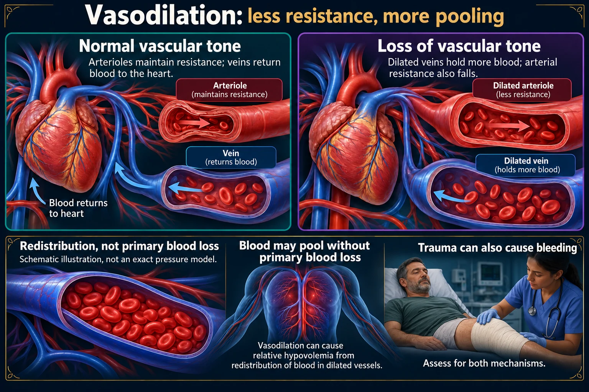
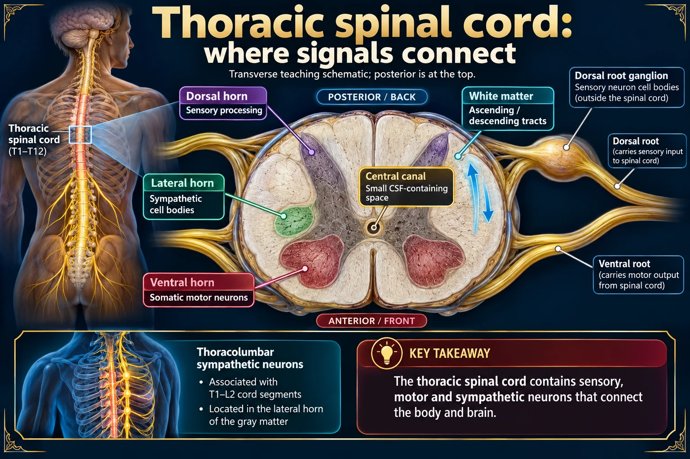
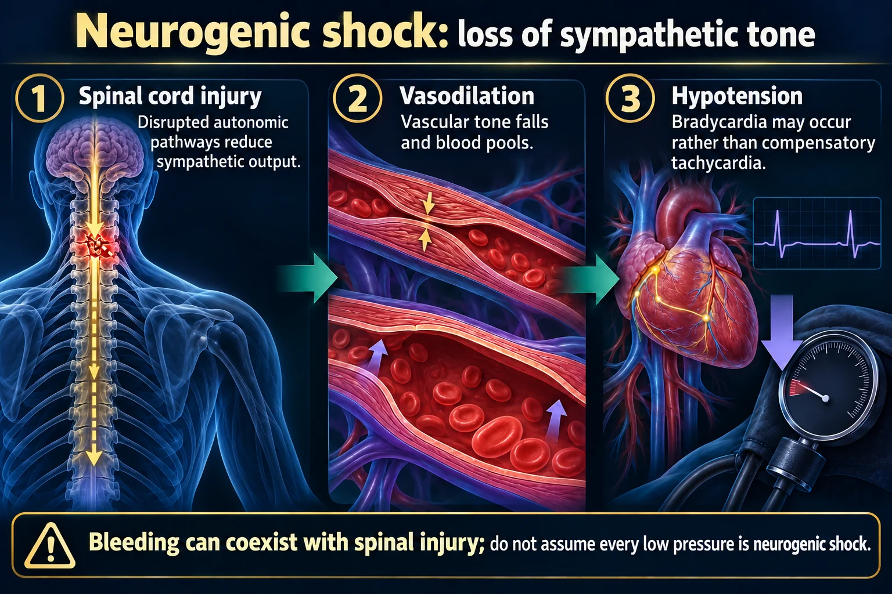
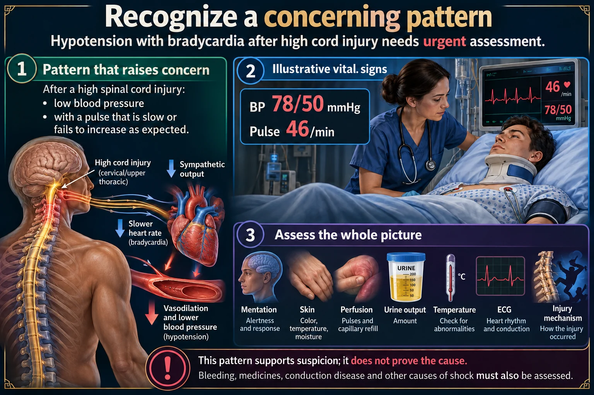
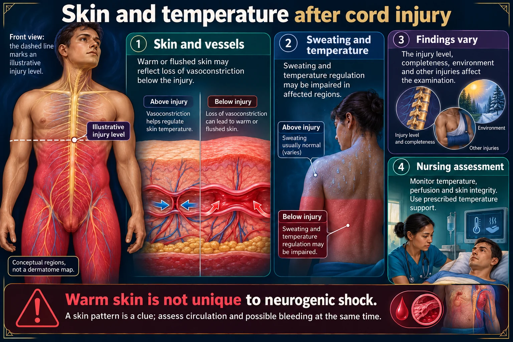
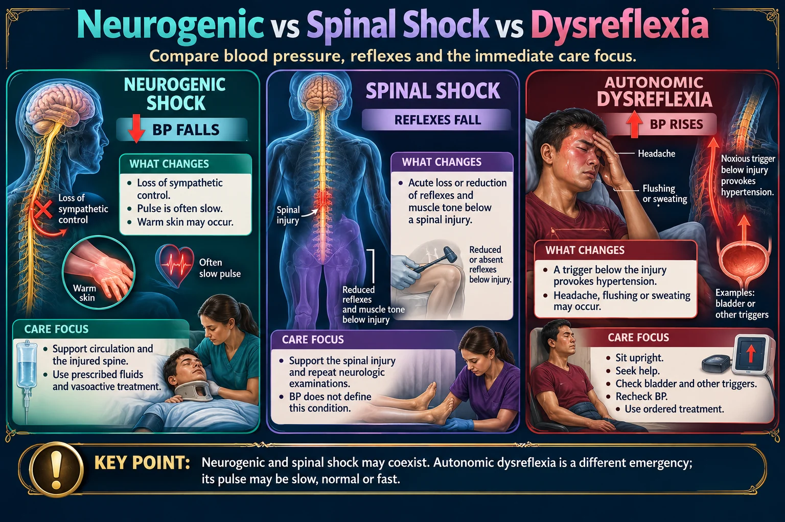
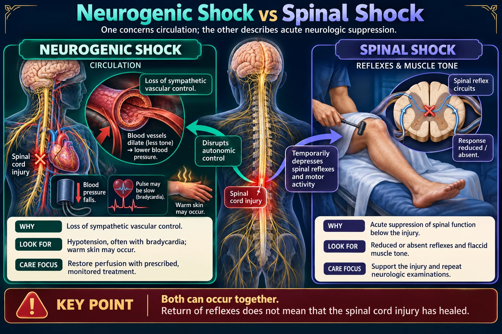
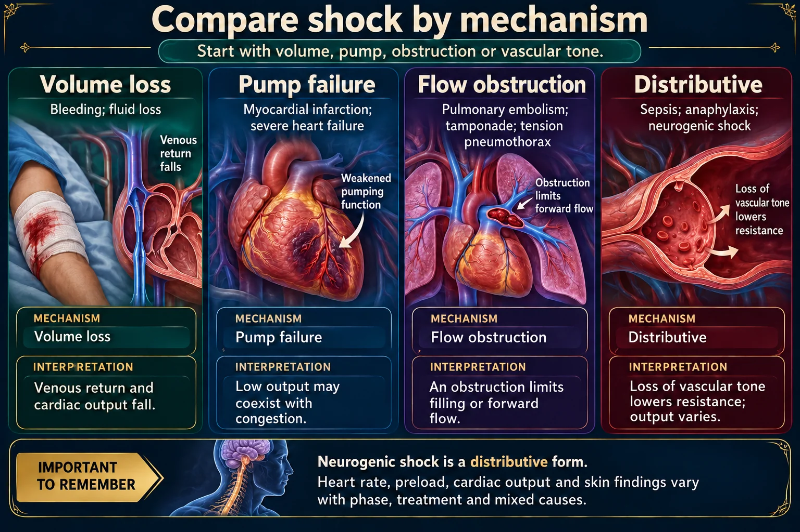
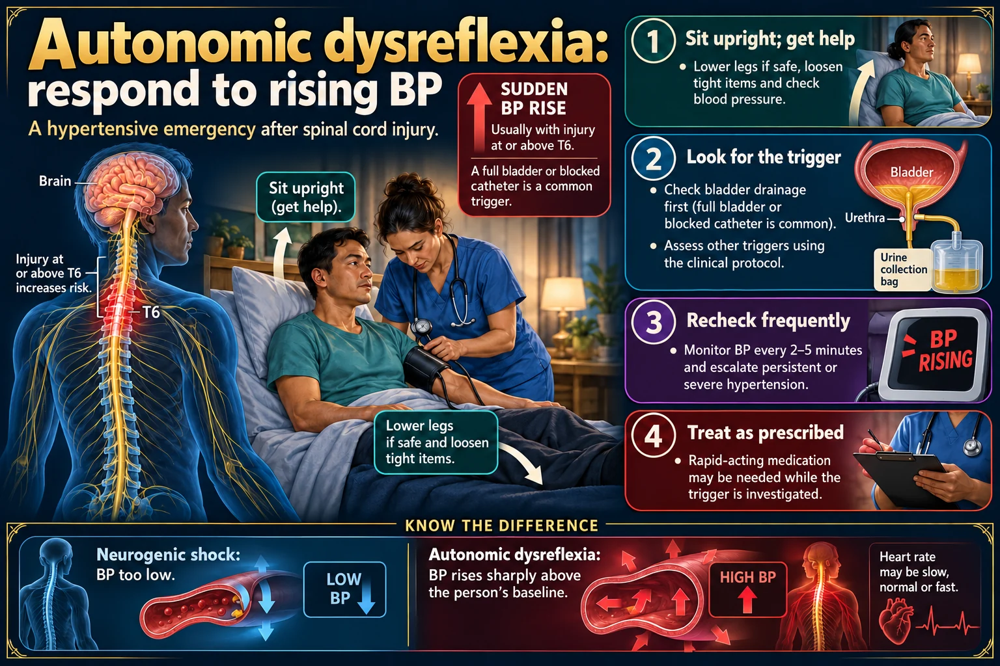

What to look for
Hypotension, bradycardia or an inadequate heart-rate response, altered perfusion and temperature dysregulation may follow a high cord injury.
Understand why vascular tone is lost, recognize impaired perfusion, and distinguish it from spinal shock and autonomic dysreflexia.
Neurogenic shock is a circulation problem.
Hypotension WITH bradycardia is the textbook identifier. Still rule out bleeding.
Support breathing and perfusion while maintaining spinal precautions.
A high spinal cord injury can interrupt sympathetic control of circulation.

The spinal sympathetic and brainstem vagal routes differ. Cervical and high thoracic injuries can produce hypotension with relative or absolute bradycardia.
Open full-size graphic ↗ · Source 1 · Source 2Neurogenic shock: autonomic pathways A high cord injury can impair both vascular tone and heart-rate responses. Sympathetic route Descending signals travel through the spinal cord to thoracolumbar sympathetic neurons. Vagal route The vagus travels from the brainstem to the heart outside the spinal cord. High spinal cord injury Loss of vascular sympathetic control permits dilation and pooling. Cardiac sympathetic disruption is greatest with higher injuries. Relative vagal predominance A slow pulse can accompany hypotension when sympathetic cardiac drive is reduced. Reduced vascular resistance + reduced venous return can lower cardiac output and tissue perfusion. Injury level and completeness affect the findings.

Vasodilation lowers systemic vascular resistance and venous return. Neurogenic shock and hemorrhage may coexist after trauma.
Open full-size graphic ↗ · Source 1 · Source 2Vasodilation: less resistance, more pooling Equal red-cell counts illustrate redistribution, not an exact pressure model. Normal vascular tone Arterioles maintain resistance; veins return blood to the heart. Loss of vascular tone Dilated veins hold more blood; arterial resistance also falls. Blood may pool without primary blood loss: relative hypovolemia. Trauma can also cause bleeding, so assess for both mechanisms.

Narrow dorsal horns, broad ventral horns, lateral gray matter and the central canal are shown with anatomically consistent orientation. The diagram is schematic, not to scale.
Open full-size graphic ↗ · Source 1Thoracic spinal cord: where signals connect Transverse teaching schematic; posterior is at the top. POSTERIOR / BACK ANTERIOR / FRONT Dorsal horn Sensory processing Lateral horn Sympathetic cell bodies Ventral horn Somatic motor neurons White matter Ascending / descending tracts Central canal Small CSF-containing space Thoracolumbar sympathetic neurons are associated with T1–L2 cord segments. This simplified section omits roots and meninges so the gray-matter regions remain clear.

Bleeding can coexist with spinal injury; do not assume every low pressure is neurogenic shock.
Spinal cord injury
Disrupted autonomic pathways reduce sympathetic output.
Vasodilation
Vascular tone falls and blood pools.
Hypotension
Bradycardia may occur rather than compensatory tachycardia.
Assess
Pressure, pulse, temperature, perfusion and neurologic findings.
Support
Maintain spinal precautions and follow hemodynamic and respiratory treatment plans.
Distinguish
Neurogenic shock differs from spinal shock, which describes temporary loss of neurologic reflex activity.
📘 Course study notes
Neurogenic shock is distributive shock caused by the loss of sympathetic tone after a spinal cord injury at T6 or above. The tank is full and the pump works — but the nerves that keep the vessels squeezed have been cut, so the pipes fall wide open. It is the only shock that presents with hypotension WITH bradycardia, and warm, dry, flushed skin instead of cold and clammy. That one pairing is the most-tested fact in the whole shock family.
Pump · Tank · Pipes — this one is a PIPES problem, and the reason the pipes failed is neurological, not vascular.
Neurogenic shock is one of the three DISTRIBUTIVE shocks — the blood is still there, it is just in all the wrong places.
All three drop the SVR. Only neurogenic drops the heart rate with it.
This is relative hypovolemia: nothing has been lost, but the container is now far too big for the volume inside it. Venous return falls → preload falls → cardiac output falls → tissue perfusion falls.
Almost every neurogenic shock is also a major trauma. Assume the hypotension is from hemorrhage until proven otherwise — bleeding is far more common and it kills faster.
The clue that it is neurogenic and not hemorrhagic is the heart rate: hemorrhage causes tachycardia; neurogenic shock does not. A trauma patient can have both at once.
Never assume hypotension in a trauma patient is “just neurogenic” without ruling out bleeding.
Low pressure with an unexpectedly slow pulse is a clue, not a diagnosis.
Hypotension, bradycardia or an inadequate heart-rate response, altered perfusion and temperature dysregulation may follow a high cord injury.
Bleeding can coexist with neurogenic shock. A slow pulse or warm skin does not exclude another cause of shock.

Example values are illustrative. Do not diagnose neurogenic shock from heart rate or warm skin alone; exclude hemorrhage and other causes.
Open full-size graphic ↗ · Source 1 · Source 2Recognize a concerning pattern Hypotension with bradycardia after high cord injury needs urgent assessment. Pattern that raises concern After a high spinal cord injury: low blood pressure with a pulse that is slow or fails to increase as expected. Assess the whole picture Check mentation, skin, perfusion, urine output, temperature, ECG and the injury mechanism. ILLUSTRATIVE VITAL SIGNS BP 78/50 mmHg Pulse 46/min This pattern supports suspicion; it does not prove the cause. Bleeding, medicines, conduction disease and other causes of shock must also be assessed.

A simplified body map shows regions to assess. Skin and sweating patterns are variable and do not independently establish the cause of shock.
Open full-size graphic ↗ · Source 1 · Source 2Skin and temperature after cord injury Front view; the dashed line marks an illustrative injury level. Illustrative injury level Skin and vessels Warm or flushed skin may reflect loss of vasoconstriction below the injury. Sweating and temperature Sweating and temperature regulation may be impaired in affected regions. Findings vary The injury level, completeness, environment and other injuries affect the examination. Nursing assessment Monitor temperature, perfusion and skin integrity. Use prescribed temperature support. Warm skin is not unique to neurogenic shock. A skin pattern is a clue; assess circulation and possible bleeding at the same time.
📘 Course study notes
Two monitors, the same blood pressure, opposite heart rates. That is the whole recognition problem.
“A client is admitted with neurogenic shock after a traumatic motor vehicle collision. Which manifestation best characterizes this diagnosis?”
BRADYCARDIA.
Hypotension appears in every shock, so it cannot be the answer that “best characterizes” it. The slow heart rate is unique to neurogenic shock.
Start with blood pressure, then reflexes, then the trigger.

Neurogenic shock affects circulation; spinal shock describes depressed spinal function; autonomic dysreflexia is a sudden hypertensive response to a trigger, usually in injury at or above T6.
Open full-size graphic ↗ · Source 1 · Source 2 · Source 3Neurogenic vs spinal shock vs dysreflexia Compare blood pressure, reflexes and the immediate care focus. NEUROGENIC SHOCK BP FALLS WHAT CHANGES Loss of sympathetic control. Pulse is often slow; warm skin may occur. CARE FOCUS Support circulation and the injured spine; use prescribed fluids and vasoactive treatment. SPINAL SHOCK REFLEXES FALL WHAT CHANGES Acute loss or reduction of reflexes and muscle tone below a spinal injury. CARE FOCUS Support the spinal injury and repeat neurologic examinations. BP does not define this condition. AUTONOMIC DYSREFLEXIA BP RISES WHAT CHANGES A trigger below the injury provokes hypertension. Headache, flushing or sweating may occur. CARE FOCUS Sit upright, seek help, check bladder and other triggers, and recheck BP. Use ordered treatment. Neurogenic and spinal shock may coexist. Autonomic dysreflexia is a different emergency. Your textbook pattern: severe hypertension with bradycardia.

Neurogenic shock and spinal shock are distinct but may coexist after cord injury. Reflex recovery does not establish complete neurologic recovery.
Open full-size graphic ↗ · Source 1 · Source 2Neurogenic shock vs spinal shock One concerns circulation; the other describes acute neurologic suppression. NEUROGENIC SHOCK SPINAL SHOCK CIRCULATION REFLEXES & MUSCLE TONE Blood pressure falls Pulse may be slow Spinal reflex circuits Response reduced / absent WHY Loss of sympathetic vascular control. LOOK FOR Hypotension, often with bradycardia; warm skin may occur. CARE FOCUS Restore perfusion with prescribed, monitored treatment. WHY Acute suppression of spinal function below the injury. LOOK FOR Reduced or absent reflexes and flaccid muscle tone. CARE FOCUS Support the injury and repeat neurologic examinations. Both can occur together. Return of reflexes does not mean that the spinal cord injury has healed.

The four major mechanisms overlap. Sepsis, anaphylaxis and neurogenic shock are distributive causes; hemodynamic patterns are not fixed rules.
Open full-size graphic ↗ · Source 1 · Source 2Compare shock by mechanism Start with volume, pump, obstruction or vascular tone. MECHANISM COMMON EXAMPLES INTERPRETATION Volume loss Bleeding; fluid loss Venous return and cardiac output fall. Pump failure Myocardial infarction; severe heart failure Low output may coexist with congestion. Flow obstruction Pulmonary embolism; tamponade; tension pneumothorax An obstruction limits filling or forward flow. Distributive Sepsis; anaphylaxis; neurogenic shock Loss of vascular tone lowers resistance; output varies. Neurogenic shock is a distributive form. Heart rate, preload, cardiac output and skin findings vary with phase, treatment and mixed causes.
📘 Course study notes
Two comparisons matter: neurogenic against the other four shocks, and neurogenic against spinal shock.
| Type | Preload (CVP) | CO | SVR | HR | Skin |
|---|---|---|---|---|---|
| Hypovolemic | ↓↓ | ↓ | ↑ | ↑ | Cold, clammy, pale |
| Cardiogenic | ↑↑ | ↓↓ | ↑ | ↑ | Cold, clammy, mottled |
| Septic (early) | ↓ | ↑ | ↓↓ | ↑ | WARM, flushed, dry |
| Anaphylactic | ↓ | ↓ | ↓↓ | ↑ | Warm, hives, swelling |
| NEUROGENIC | ↓ | ↓ | ↓↓ | ↓ SLOW | WARM, DRY, PINK |
Every row has an arrow UP in the heart-rate column except the last one.
| NEUROGENIC SHOCK | SPINAL SHOCK | |
|---|---|---|
| What kind of problem | Circulatory — a shock state | Neurological — a reflex state |
| Mechanism | Loss of sympathetic tone → vasodilation | Temporary “stunning” of the cord below the injury |
| Blood pressure | LOW | Can be normal |
| Heart rate | SLOW (bradycardia) | Not defined by heart rate |
| Reflexes | Not the defining feature | ABSENT below the injury — flaccid, areflexic |
| Duration | Hours to weeks | Days to weeks; ends when reflexes return |
| Treatment | Fluids, vasopressors, atropine for bradycardia | Supportive care and time |
Protect oxygenation, perfusion and the injured spinal cord.
Assess airway, breathing and circulation while maintaining spinal precautions. High cervical injuries may impair breathing. Activate the appropriate trauma or emergency response.
Give prescribed fluids with frequent reassessment. Persistent vasodilation may require vasoactive support. Treat symptomatic bradycardia according to the resuscitation protocol; atropine or pacing may be needed.
Trend BP/MAP, rhythm, mental status, urine output, respiratory status and temperature. Monitor infusion sites and reassess for bleeding or other causes of deterioration.
Use prescribed temperature management, pressure-injury prevention, thrombosis prophylaxis, bladder and bowel care, nutrition and rehabilitation support. Protect insensate skin from heat injury.
Your course text: in acute spinal cord injury the MAP goal is often set higher than usual, frequently 85–90 mmHg, to perfuse the injured cord. Use the ordered goal for the individual patient.
Side note: the 2024 guideline suggests augmenting MAP to a lower limit of 75–80 mmHg without actively augmenting above 90–95 mmHg, for 3–7 days. These are weak recommendations based on very low-quality evidence.
Choice of vasopressor is individualized. Norepinephrine is commonly used; pure alpha stimulation can worsen bradycardia. Follow institutional infusion and extravasation-monitoring procedures. A blood-pressure target does not replace assessment of tissue perfusion.
2024 acute SCI hemodynamic guideline · Vasopressor study page
📘 Course study notes
Protect the spine, hold the blood pressure up, and keep the patient warm — in that order.
IV normal saline (0.9% NaCl) is the priority intervention to raise the blood pressure. It fills the enlarged container.
But the problem is tone, not volume — so fluid alone often will not fix it, and over-resuscitating floods the lungs in a patient whose heart cannot speed up to cope. Give a measured bolus, reassess, and move to a vasopressor if the MAP will not hold.
All are given by infusion pump through a central line where possible, titrated to a MAP goal. In acute spinal cord injury the MAP target is often set higher than usual (frequently 85–90 mmHg) to perfuse the injured cord.
Never give a vasopressor without checking the site — extravasation causes tissue necrosis. Use a central line whenever possible and monitor the site every hour.
Atropine blocks the vagus — exactly the nerve that is running unopposed here — so it raises the heart rate. It is used for symptomatic bradycardia.
Keep it available at the bedside for procedures that stimulate the vagus, especially suctioning and turning. Transcutaneous or transvenous pacing is the backup.
Below the level of injury they cannot vasoconstrict or shiver, so heat pours out and body temperature drifts toward the room. Hypothermia worsens coagulopathy and acidosis in a trauma patient.
Never use an unmonitored heating pad on skin without sensation — they cannot feel a burn.
The blood pressure rises sharply above baseline; the response is different.

A sudden rise from the person’s baseline may signal autonomic dysreflexia. Position upright, seek help, assess triggers and monitor BP frequently; medication may be required.
Open full-size graphic ↗ · Source 1Autonomic dysreflexia: respond to rising BP A hypertensive emergency after spinal cord injury. AUTONOMIC DYSREFLEXIA: sudden BP rise, usually with injury at or above T6. A full bladder or blocked catheter is a common trigger. 1 Sit upright; get help Lower legs if safe, loosen tight items and check blood pressure. 2 Look for the trigger Check bladder drainage first; assess other triggers using the clinical protocol. 3 Recheck frequently Monitor BP every 2–5 minutes and escalate persistent or severe hypertension. 4 Treat as prescribed Rapid-acting medication may be needed while the trigger is investigated. Neurogenic shock: BP too low. Autonomic dysreflexia: BP rises sharply above the person’s baseline. Your textbook pattern: severe hypertension with bradycardia (the picture notes the rate can vary).
Open the full autonomic dysreflexia guide →
📘 Course study notes
Same patient, same T6 line — but weeks later and with the blood pressure going the other way.
Once spinal shock resolves, reflexes below the injury come back — but they are disconnected from the brain’s control. A painful or distending stimulus below the level triggers a massive sympathetic reflex, and the brain cannot switch it off.
The result is severe hypertension below the block, while the intact vagus slows the heart from above. That is why the patient is hypertensive AND bradycardic with a pounding headache.
Only occurs with injuries at or above T6.
Prevention is the whole nursing role: keep the bladder empty, the bowel regular, the clothing loose and the skin intact.
| The stem says… | The answer is… |
|---|---|
| “Which manifestation best characterizes neurogenic shock?” | Bradycardia |
| “Skin findings in neurogenic shock?” | Warm, dry and flushed/pink below the injury |
| “Priority intervention for the hypotension?” | IV normal saline, then vasopressors if the MAP will not hold |
| “Hypotensive trauma patient with HR 128” | Suspect hemorrhage — that is not neurogenic shock |
| “Loss of all reflexes below the injury” | Spinal shock, not neurogenic shock |
| “T4 injury, pounding headache, BP 210/110” | Autonomic dysreflexia — sit the patient upright FIRST |
| “First action in autonomic dysreflexia?” | Raise the head of the bed / sit them up, then find the trigger |
| “How do you prevent autonomic dysreflexia?” | Keep the bladder empty (catheter care), prevent constipation, avoid tight clothing |
| “Why does this patient get cold so easily?” | They cannot vasoconstrict, shiver or sweat below the injury |
Open an answer after you have tried to explain it yourself.
No. It raises suspicion after high cord injury, but bleeding, medicines, conduction problems and other causes still need assessment. On the exam, though, the finding that best characterizes neurogenic shock is bradycardia.
No. Reflex recovery marks changing spinal shock physiology; it does not establish full neurologic recovery.
Neurogenic shock causes circulatory failure with hypotension. Autonomic dysreflexia causes a sudden rise in BP from baseline. Spinal shock is defined by depressed neurologic function rather than a particular BP.
📘 Course study notes